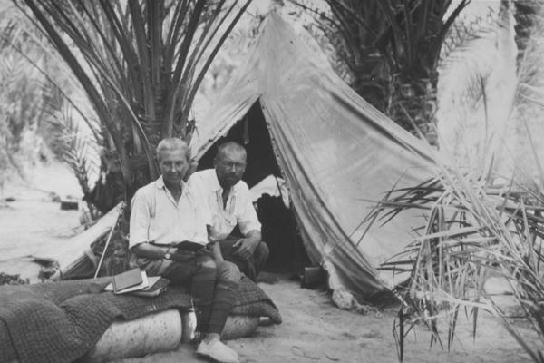

| Dr. Gabriel (1892-1976) was a geographer
and travel writer from Austria who made several trips (1927-8, 1933, 1937)
to Iran's deserts. He wrote five books about his trips and findings. His
book Durch Persiens Wüsten (1935) is translated into Persian.
Books by Alphons Gabriel:
A. Gabriel, Im weltfernen Orient, Munich and Berlin, 1929.
----------, Durch Persiens Wüsten, Stuttgart, 1935.
----------, Aus
dem Einsamkeiten Irans, Stuttgart, 1939.
----------, Weites, wildes
Iran, Stuttgart, 1942.
----------, Die Erforschung Persiens, Vienna,
1952
(detailed illustrated review of explorer-travelers in Persia,
esp. pp. 56-60, 93-99, 174-99, 243-52, 301-17) |

This is the only picture of Gabriel (and his wife) that I was able to
find on the Internet. It is copyrigth material taken from
here. I guess the picture was
taken in the small village of Aroosan. Gabriel has beautiful things to say
about Aroosan in his books.
|